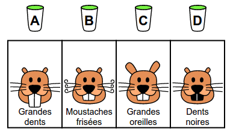
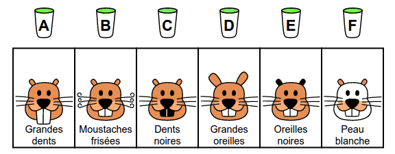
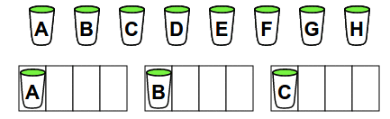
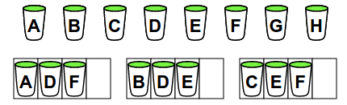
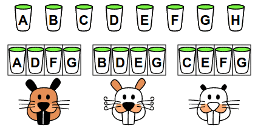
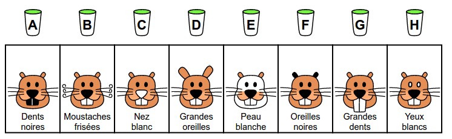

Bävrarna hittade X trolldrycker. Varje trolldryck ändrar en sak i bäverns ansikte.
Följande tre bävrar drack X trolldrycker var. Deras ansikten ändrades så här:
Tre bävrar dricker trolldrycker, hitta effekten av varje trolldryck.
Dra trolldryckerna till bävrarna och tryck sedan "Låt bävrarna dricka".
Observera: Om du försöker igen efter att bävrarna har druckit, så kommer trolldryckerna ha blandats så att samma bokstav inte längre står för samma trolldryck.
Bävrarna här nedanför drack bara en trolldryck var. Dra varje bäver till rutan under den trolldryck som den drack.
Observera : Om du inte är säker på svaret, så fyll inte i på måfå, det är bättre att lämna tomt.


För att skilja effekterna av trolldryckerna kommer vi att fördela dem till bävrarna så att:
Låt oss börja med dryckerna som ska drickas av en enda bäver och välj dryck A, B och C till de olika bävrarna:

Fördela sedan dryckerna som ska drickas av två bävrar: dryck D till bäver 1 och 2, dryck E till bäver 2 och 3 och dryck F till bäver 1 och 3.

Fördela sedan dryck G till alla bävrar. Dryck H ges inte till någon.
Låt sedan bävrarna dricka! Observera att effekten av trolldryckerna i din version av uppgiften kan vara annorlunda än i lösningen nedan, men principen för att särskilja trolldryckerna är densamma.

För att identifiera effekterna, är det snabbaste att börja med effekterna som är gemensamma för flera bävrar.

I den svåra versionen av denna uppgift vill vi fördela dryckerna på tre bävrar, så att vi kan identifiera varje dryck. För att bygga en lösning kan vi göra en tabell: varje rad motsvarar en dryck, varje kolumn motsvarar en bäver, och i varje ruta inuti tabellen noterar vi 1 om bävern dricker drycken på den raden och 0 om den inte dricker.
Målet är att kunna identifiera dryckerna, vilket innebär att alla rader i tabellen måste vara olika. En möjlighet är att fylla i raderna enligt nedan.
| Bäver 1 | Bäver 2 | Bäver 3 | |
| Dryck A | 0 | 0 | 0 |
| Dryck B | 0 | 0 | 1 |
| Dryck C | 0 | 1 | 0 |
| Dryck D | 0 | 1 | 1 |
| Dryck E | 1 | 0 | 0 |
| Dryck F | 1 | 0 | 1 |
| Dryck G | 1 | 1 | 0 |
| Dryck H | 1 | 1 | 1 |
Naturligtvis kunde vi ha lagt raderna i en annan ordning. Men alla lösningar motsvarar nödvändigtvis en viss ordning av dessa rader.
Raderna i tabellen ovan motsvarar de binära talen från 0 till 7.